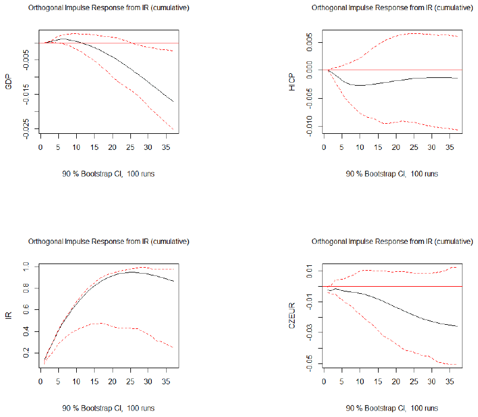

Abstract
This paper focuses on the estimation of the effective lower bound on the Czech National Bank’s policy rate. The effective lower bound is determined by the value below which holding and using cash would be preferable to holding deposits with negative yields. This bound is approximated on the basis of the storage, insurance and transportation costs of cash and the loss of convenience associated with cashless payments. This estimate is complemented by a calculation based on interest charges reflecting the impact of negative rates on banks’ profitability. Overall we get a mean of slightly below −1%, approximately in the interval (−2.0%, −0.4%). In addition, by means of a vector autoregression we show that the potential of negative rates is not sufficient to deliver monetary policy easing similar in its effects to the impact of the exchange rate commitment during the years 2013–2017.

Reference: Tomas Havranek, Dominika Kolcunova (2018), "Estimating the Effective Lower Bound on the Czech National Bank's Policy Rate." Czech Journal of Economics and Finance 68(6): 550-577.
How to cite
Tomas Havranek, Dominika Kolcunova (2018), "Estimating the Effective Lower Bound on the Czech National Bank's Policy Rate." Czech Journal of Economics and Finance 68(6): 550-577.
BibTeX
@article{kolcunova2018elb,
author = {Dominika Kolcunova and Tomas Havranek},
title = {Estimating the Effective Lower Bound on the Czech National Bank's Policy Rate},
journal = {Czech Journal of Economics and Finance},
year = {2018},
}